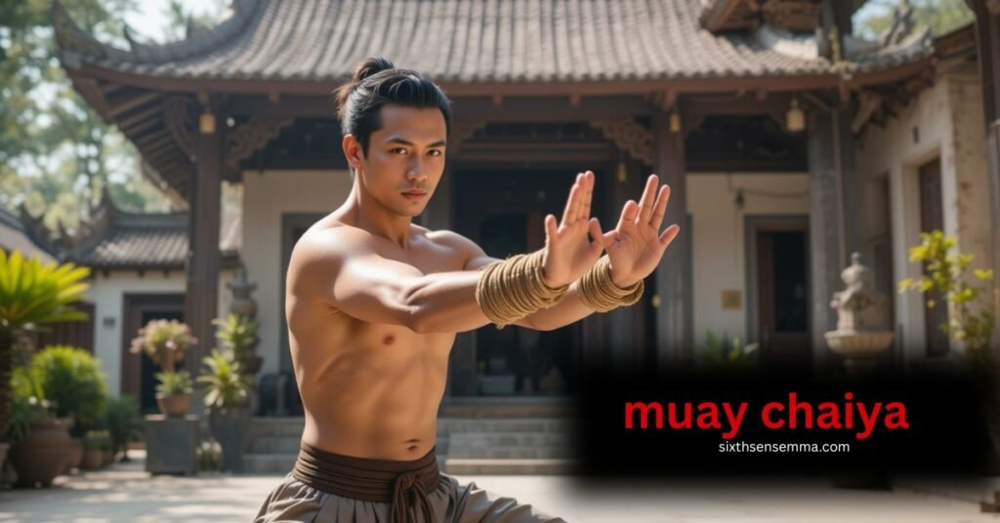
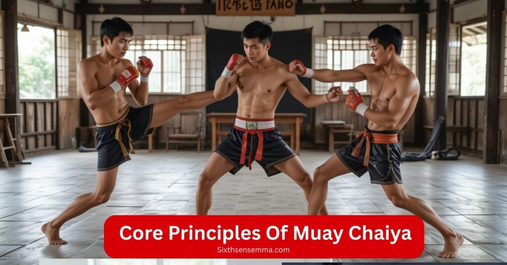
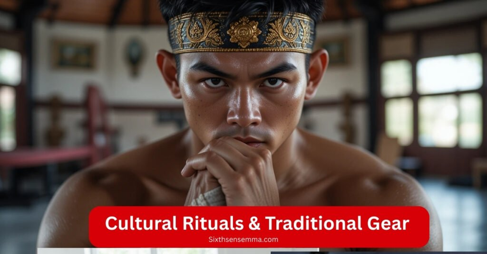

How Muay Chaiya Builds Calm Confidence Under Pressure

Muay Chaiya, a distinctive subset of Muay Boran, is an age-old martial art that originated in southern Thailand more than 200 years ago. It began in the town of Chaiya, Surat Thani, and is rooted in teachings passed down by a monk named Por Than Mar (also called Poh Than Ma). Known for his cunning, he once tamed a rampaging elephant, an act that earned great respect.
With an increasing focus on defense and upholding Thai customs, his lessons helped to build this potent style of kickboxing. Practiced at Wat Thung Chap Chang, a historic temple, the art reflects deep local values. Muay Chaiya is more than a style it carries the legacy of discipline, strategy, and culture passed down through years of teaching
Origins & Rich History of Muay Chaiya
Muay Chaiya has a deep lineage that traces back to the 19th century, during the era of King Rama V, when the art gained fame as a powerful and strategic martial style. It was taught in the south of Thailand, particularly in city areas and forests, where military training and sacred rituals shaped the discipline.
Por Than Ma, the monk often credited as the first true torchbearer, passed down his teachings to select figures, including noble fighters like Muen Plong, who later moved to Bangkok later becoming a public face of the style. His student, Jumnonthong, continued the legacy by refining the methods and bringing demonstrations to locals, preserving the style’s identity and traditions.
The Sriyabhai/Sriyapai clan played a central role, with masters like Chamnongthong and Jub Kham helping the style emerge as a respected training system. The status of “grandmaster” or keeper of the tiger tail strategy was earned only by those who proved their skill in real bouts.
From the temple of Chap Chang to the elite army style fighters of the Sriyabhai era spanning more than 200+ years, this art was carried forward by the locals, regional leaders, and governor backed masters, becoming a symbol of Thai strength and traditions.
From Battlefield to Cultural Legacy
Muay Chaiya was once forged for lethal combat and military confrontations, but over time, it transformed into a graceful, ritualized art deeply rooted in cultural heritage. It carries layers of meaning starting from Wai Kru dances that honor teachers, to precise footwork, joint locks, and throws used in real fights.
The style is known for its evasive tactics and sharp counters, giving fighters an edge in serious combat. Yet, it also became a court tradition, with royal support turning demonstrations into public ceremonies that preserved its tradition.
Clothing worn in these events, along with the art’s traditional rituals, reflect a heritage that was not just absorbed but proudly carried from the battlefield into the cultural soul of Thailand. Muay Chaiya remains an all around style, blending skill and being with history, showing how a system once meant for war was still able to become a living tradition.
Core Principles That Define Muay Chaiya

| Principle | Short Description |
|---|---|
| Yang Sam Movement | 3 step zigzag walk to dodge and stay balanced |
| Agile Footwork | Compact, quick steps for control and mobility |
| Triangle Guard | Low forearm guard to block and parry |
| Rhythm & Flow | Smooth motion for slip, retreat, and attack |
| Counter Strategy | Wait, then strike with smart timing and angles |
| Precision Strikes | Swift hits to key targets at 45° openings |
- Three Step Yang Sam Movement
At the heart of Muay Chaiya lies the Yang Sam or three step method. It involves a strategic step, turn, and shift in a zigzag motion, helping fighters stay off line from direct attacks while maintaining balance and readiness. - Compact and Agile Footwork
The style emphasizes compact, graceful, and agile footwork. Movements are tight and controlled, allowing seamless transition between defense and counter attacks with minimum wasted energy. - Triangle Guard Positioning
Fighters maintain a low guard, forming a defensive triangle using their forearms, elbows, and knees. This structure deflects, blocks, and parries incoming strikes with precision, creating a strong fence against aggressive attacks. - Rhythm and Flow
Each movement in Muay Chaiya is connected through fluid transitions. Fighters learn to slip, retreat, or advance while maintaining natural rhythm, turning defense into a seamless response. - Counter Based Defense Strategy
Instead of initiating attacks, Muay Chaiya prepares the fighter to respond. Using smart positioning, timing, and offnline movement, fighters wait for the perfect moment to strike back, often at sharp 45° angles that bypass the opponent’s guard
These core principles not only reflect the essence of the style, but also highlight how Muay Chaiya blends timing, motion, and smart tactics into a complete system of defense and counter offense.
Techniques & Training Drill
| Technique | Short Description |
|---|---|
| Jot Muay | Sharp, controlled strikes aimed at disrupting an opponent’s rhythm and guard. |
| Hak | Using leverage or the forearms to weaken the limbs is a joint breaking technique. |
| Tum | Close range throwing move to bring opponents off balance and to the ground. |
| Tap | To simulate, divert, or gauge the opponent’s response, employ light tapping motions. |
| Look Mai / Mae Mai | Traditional Muay Chaiya combinations that fuse offense and defense seamlessly. |
| Sweeping | Low foot movements to knock down opponents by targeting their balance points. |
| Chuek Wrapping | Rope wrapping around wrists and forearms for grip, power, and protection. |
| Simultaneous Strike & Block | Muay Chaiya teaches fighters to block and strike at the same time for efficiency. |
| Body Control & Flow | Full bodied, smooth motion that links defense to counterattack effortlessly. |
| Off Balance Redirection | uses clever movements and angles to break an opponent’s stance and change their force. |
Jot Muay
A sharp striking method that targets openings in the opponent’s defense, used to interrupt rhythm and control distance.
Hak
A powerful joint lock or joint breaking technique, aimed at disabling arms or legs using forearms and leverage.
Tum
A close range throwing technique that brings the opponent off balance, often used after redirecting their force.
Tap
Light contact used to fake, probe, or set up an opponent; helps gauge reactions and create striking chances.
Look Mai / Mae Mai
Core traditional combos that fuse defense and offense, teaching fighters to move fluidly and naturally in combat.
Sweeping
Low foot movements that aim to unbalance and drop the opponent by targeting their legs or support base.
Chuek Wrapping
Rope wrapping around the wrists and forearms, enhancing protection, grip, and the impact of strikes.
Simultaneous Strike and Block
Muay Chaiya teaches fighters to block and strike at once, improving speed, timing, and defense to attack flow.
Body Control & Flow
Using full bodied, smooth movements, the fighter transitions from block to counterattack with precision.
Redirection & Off Balance Tactics
Techniques that involve stepping offline or angling to redirect an opponent’s attack, leaving them exposed.
These drills and techniques build a strong, flexible, and reactive fighter who can blend defense, striking, and throws with natural motion and control.
Is Muay Chaiya safe for older adults?
Yes, Muay Chaiya is safe for older adults due to its light, adjusted training that avoids intense sparring and focuses on mobility, flexibility, and proper guidance. It includes stretching, pad drills, and rest, making it ideal for people in their 60s and 70s.
Studies and participants have reported improved mental, emotional, and physical well being, along with a strong sense of community and belonging. The martial style is adaptable, helps build resilience, and supports long term health and fitness at all levels.
Muay Chaiya vs Modern Muay Thai: What Sets It Apart
At its heart, Muay Chaiya puts defense and preservation above all else. Fighters focus on parrying, deflecting, and evading using forearms, elbows, and agile footwork to turn defense immediately into offense. This contrasts sharply with modern Muay Thai, where the spotlight often shines on delivering raw power heavy kicks, knees, and punches within a sport framework designed for scoring and spectatorship.
Cultural & Ritual Depth
- Muay Chaiya remains a living martial tradition, rich in region specific rituals, traditional garb, and even sacred rope wrapped hands (Kard Chuek). It values discipline, restraint, and cultural preservation
- Meanwhile, modern Muay Thai has streamlined many of those old rituals into a sport centric format retaining elements like the Mongkhon (headband) and Wai Khru/Ram Muay dance, but often stripping down deeper spiritual layers
Are there competitions in Muay Chaiya?
Yes, there are competitions in Muay Chaiya, though they’re not as widespread or commercialized as modern Muay Thai bouts. Some events are held in Thailand and abroad where Muay Chaiya fighters compete under adapted rule sets, often during martial arts exhibitions, cultural festivals, or traditional fighting tournaments.
For those interested in competition, training can be tailored toward amateur or professional goals, focusing on timing, balance, and defensive precision hallmarks of Chaiya. Fighters often blend Muay Chaiya’s classical techniques with modern ring rules, making it both effective and unique in a competitive setting.
While the art wasn’t originally designed for point-scoring matches, its techniques are fully adaptable, and several practitioners have successfully entered combat sports events using Chaiya’s principles. If your goal includes competition, instructors at places like Sixth Sense MMA can structure your path accordingly.
Cultural Rituals & Traditional Gear

Muay Chaiya is as much spiritual and cultural as it is martial. Among its features is the unique Wai Khru Ram Muay sequence, a sophisticated ceremony with graceful movements inspired by animals, gods, and legendary heroes. Fighters begin by circling the ring three times, kneeling and bowing, then performing a stylized dance that signals respect to teachers, ancestors, and Buddha while also serving as a warm up.
The Wai Khru steps in Muay Chaiya frequently incorporate unique movement patterns that have been handed down through the centuries, with the choreography serving as a silent testament to one’s ancestry.
During this ritual, fighters wear sacred gear that blends protection with symbolism:
- Mongkhon (headband): This sacred band, usually braided by the teacher and blessed in a temple, is placed on the fighter’s head before the Wai Khru. It symbolizes spiritual protection, the bond between teacher and student, and ring safety. After the dance, the trainer removes it and hangs it in the corner as a token of continued blessing
- Pra Jiad (armbands): These bands, traditionally made from a mother’s sarong, were worn by warriors for luck and protection. Now they’re worn around the biceps during the Wai Khru and fight, serving both as morale boosters and symbols of spiritual strength.
- Hand bindings (Kard Chuek): In traditional Muay Chaiya, fighters wrap their hands and wrists in rope before rituals and sparring. This adds wrist support and an old-school aesthetic alluding to the art’s battlefield history while keeping grappling and striking techniques seamless.
These sacred items are treated with the utmost respect never to touch the ground or be mishandled. Beyond their physical roles, they carry layered symbolism: honoring women (through the pra jiad), lineage (through the mongkhon), and cultural roots. These rituals and gear don’t just connect fighters to tradition they anchor Muay Chaiya in its history and spiritual identity.
Transformational Benefits of Practicing Muay Chaiya
Your physical, mental, and cultural life will truly alter as a result of practicing Muay Chaiya.Physically, it builds balance, coordination, and solid cardio endurance through dynamic footwork and full-body drills much like Muay Thai’s reputation for fitness, but with a grace-focused twist.
Mentally, it boosts confidence, sharpens situational awareness, and instills discipline just ask fighters who say the training “taught me to stay calm in chaos” and helped them overcome stress and self-doubt. Culturally, training Muay Chaiya connects you deeply with Thai traditions from performing the Wai Kru to wearing sacred headbands and armbands cultivating respect for heritage and roots
In short, Muay Chaiya isn’t just a martial art you grow stronger in body, sharper in mind, and richer in cultural understanding.
How long does it take to learn?
Learning Muay Chaiya begins with building strong basics like stance, footwork, defense, and simple combos, which usually takes about 3 months with 12 consistent lessons.
From there, 6–12 months of steady practice help students become competent enough for sparring and applying techniques with proper timing and flow. True mastery, however, is a lifetime journey of growth, refinement, and deepening your connection to the art through continual lessons and real-time feedback.
Why Learn Muay Chaiya with SixthSenseMMA
Training Muay Chaiya at Sixth Sense MMA offers more than just technique it delivers a complete martial arts experience grounded in tradition, structure, and community. Unlike many schools, Sixth Sense combines both in person classes and live online options, making it easier for students to learn no matter their schedule or location.
The gym’s instructors are certified under Kru Lek, who carries the authentic Muay Chaiya lineage directly from master Khet Sriyabhai, ensuring students receive true, traditional instruction. Progress isn’t left to guesswork every student follows a clear, structured path with personal feedback and defined milestones.
Cultural elements are woven into every session, from rituals like Wai Kru to wearing traditional gear such as mongkhon headbands and prachiad armbands. Sparring here isn’t just about one-on-one drills it includes multi-opponent tactics and light groundwork to build real-world readiness.
What makes the experience even richer is the gym’s tight knit community classes are kept small, with a focus on group growth, support, and shared passion. For anyone serious about learning Muay Chaiya in a way that’s flexible, authentic, and meaningful, Sixth Sense MMA stands out.
7 Benefits of Training with SixthSenseMMA
- Injury-Safe Training : Uses controlled methods and light sparring to reduce injury risk.
- Hands On Instruction : Direct, practical instruction ensures faster skill development.
- Clear Progression : Structured learning path builds your skillset step by step.
- Flexible Formats : Multiple training options fit your schedule and pace.
- Cultural Atmosphere : Deeply rooted in Muay Chaiya lineage and tradition.
- Supportive Community : A strong community that motivates and grows together.
- Encouraging Environment : Positive vibe that boosts confidence and consistent progress.
Customer Reviews
- “Real Muay Chaiya, taught the right way. The culture and technique are unmatched.”
— David, California - “Perfect for older adults. I feel stronger and more balanced every week.”
— Linda, Texas - “Love the online option—works great with my busy schedule.”
— Marcus, New York - “Not just fighting—this is art, history, and discipline combined.”
— Emily, Illinois - “Small classes and real feedback. It’s personal and focused.”
— Robert, Florida - “The sparring is smart and safe. Great for learning control.”
— Ava, Nevada - “My teen son and I both train here. Best decision we made.”
— Chris, Arizona
How long does it take to learn?
Learning Muay Chaiya begins with building strong basics like stance, footwork, defense, and simple combos, which usually takes about 3 months with 12 consistent lessons. From there, 6–12 months of steady practice help students become competent enough for sparring and applying techniques with proper timing and flow.
True mastery, however, is a lifetime journey of growth, refinement, and deepening your connection to the art through continual lessons and real-time feedback.
Contact Us
Ready to start your Muay Chaiya journey?Contact us here and let SixthSense MMA help you get started.
Conclusion
Muay Chaiya is more than a martial art it’s a journey toward balance in body, mind, and spirit. Its graceful footwork and triangular stance sharpen your coordination, stability, and cardiovascular health, while its focus on fluid defense and counter striking cultivates mental clarity and confidence.
Through rituals like Wai Kru, the wearing of sacred gear, and the appreciation of Thai lineage, you immerse yourself in rich cultural heritage not as an outsider, but as part of a living tradition
Whether you’re seeking a full body workout, a meaningful practice, or a community steeped in history, Muay Chaiya offers it all. Training here builds physical fitness, cultural awareness, mental resilience, and a sense of belonging making it a truly balanced and transformative path.
FAQ’s
Muay Chaiya emphasizes defensive tactics, counter-striking, and cultural rituals, while modern Muay Thai is more sport-oriented with a focus on powerful strikes and scoring points. Muay Chaiya uses triangular stances, agile footwork, and timing to evade and redirect opponents, making it a more strategic and graceful form.
Por Than Mar, a monk from Chaiya, Surat Thani, is considered the founder of Muay Chaiya. Known for his wisdom and calm demeanor, he developed this martial art to emphasize defense, patience, and cultural values—lessons that continue to shape its practice today.
The Yang Sam is a signature three-step zigzag walking technique used to maintain balance and avoid direct attacks. It keeps the fighter off the centerline while enabling smooth transitions between defense and counter-attacks, forming the core of Muay Chaiya footwork.
Yes, Muay Chaiya is highly adaptable and safe for older adults and beginners. It focuses on controlled movement, light contact drills, flexibility, and proper form. Classes can be tailored to each student’s fitness level, emphasizing wellness, balance, and injury prevention.
Muay Chaiya includes rich rituals like the Wai Khru Ram Muay dance, the wearing of the Mongkhon (headband), Pra Jiad (armbands), and Kard Chuek (rope bindings). These honor lineage, teachers, and tradition, making Muay Chaiya both a martial and spiritual practice.
Beginners typically build a strong foundation in 3 months with 12 structured lessons. It takes about 6–12 months to gain sparring competency. Full mastery is a lifelong journey, deepening through continuous training, cultural study, and instructor feedback.
Train with us in Coppell
The first class is free. Shorts, a t-shirt and a water bottle. We lend the rest.
Book a free class